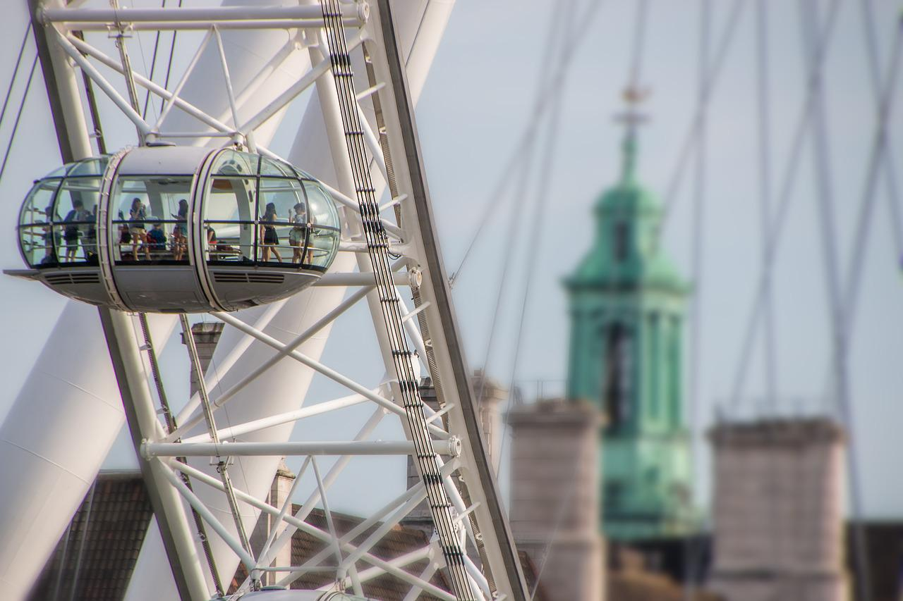

Sights nearby
The London Eye

The London Eye, or the Millennium Wheel, is a cantilevered observation wheel on the South Bank of the River Thames in London. It is Europe's tallest cantilevered observation wheel, and is the most popular paid tourist attraction in the United Kingdom with over 3 million visitors annually. It has made many appearances in popular culture.
The structure is 135 metres (443 ft) tall and the wheel has a diameter of 120 metres (394 ft). When it opened to the public in 2000 it was the world's tallest Ferris wheel. Its height was surpassed by the 160 metres (525 ft) Star of Nanchang in 2006, the 165 metres (541 ft) Singapore Flyer in 2008, and the 167 metres (548 ft) High Roller (Las Vegas) in 2014. Supported by an A-frame on one side only, unlike the taller Nanchang and Singapore wheels, the Eye is described by its operators as "the world's tallest cantilevered observation wheel".
The London Eye used to offer the highest public viewing point in London until it was superseded by the 245-metre-high (804 ft) observation deck on the 72nd floor of The Shard, which opened to the public on 1 February 2013.
Big Ben

Big Ben is the nickname for the Great Bell of the striking clock at the north end of the Palace of Westminster in London, England, and the name is frequently extended to refer also to the clock and the clock tower. The official name of the tower in which Big Ben is located was originally the Clock Tower, but it was renamed Elizabeth Tower in 2012 to mark the Diamond Jubilee of Elizabeth II.
Big Ben is the largest of the tower's five bells and weighs 13.5 long tons (13.7 tonnes; 15.1 short tons). It was the largest bell in the United Kingdom for 23 years. The origin of the bell's nickname is open to question; it may be named after Sir Benjamin Hall, who oversaw its installation, or heavyweight boxing champion Benjamin Caunt. Four quarter bells chime at 15, 30 and 45 minutes past the hour and just before Big Ben tolls on the hour. The clock uses its original Victorian mechanism, but an electric motor can be used as a backup.
The tower is a British cultural icon recognised all over the world. It is one of the most prominent symbols of the United Kingdom and parliamentary democracy, and it is often used in the establishing shot of films set in London. The clock tower has been part of a Grade I listed building since 1970 and a UNESCO World Heritage Site since 1987.